Shaik Abdul Rehman
✔ Hands-on SOC Projects | ✔ Real Investigation Reports
Cybersecurity | SOC Analyst | AI Security
✔ Hands-on SOC Projects | ✔ Real Investigation Reports
Cybersecurity | SOC Analyst | AI Security
Identifying suspicious activity using logs & intelligence tools.
Investigating domains, IPs, and threats using real-world tools.
Analyzing alerts and generating SOC-style reports.
Building AI agents to automate SOC workflows.
💥 From curiosity to capability — I don't just study cybersecurity, I practice it daily.
🎓 BCA student targeting an L1 SOC Analyst role, passionate about AI-driven threat detection and real-world SOC operations.
🛡️ Hands-on with Microsoft Defender XDR, SIEM investigations, Malware Traffic Analysis, OSINT Intelligence, Phishing Analysis, and Web Attack Investigation — validated through LetsDefend SOC skill badges.
🌍 Open to SOC Analyst internships and global opportunities in Saudi Arabia, UAE, and beyond.
Threat Detection
SIEM Investigation
Microsoft Defender XDR
OSINT Intelligence
Automated SOC workflow using AI multi-agent architecture to optimize threat detection and reduce response time.
Problem: Manual SOC operations caused delays in alert triage and incident response, increasing attacker dwell time and mean time to respond (MTTR).
Detection Logic: AI agents handled both noisy exploit chains — such as mass failed login attempts and port scans — and subtle logic bypasses like slow lateral movement and low-frequency beaconing that single-rule SIEM alerts would miss. Alerts were correlated across multiple log sources to build high-confidence threat chains before escalation.
Automated Playbook:
MTTR Impact: Automated triage reduced mean time to respond by ~60%, cutting manual investigation from ~45 minutes to under 18 minutes per alert — directly limiting attacker dwell time.
Business Impact: Faster response reduces breach exposure window, lowers cost per incident, and allows the SOC team to focus on high-priority threats instead of manual triage.
Tools: Python, AI Agents, Log Analysis, SIEM
🤖 View full AI SOC automation workflow
Real-world threat validation using OSINT tools and intelligence correlation to identify phishing infrastructure before it impacts users.
Problem: Identifying active phishing infrastructure early — preventing credential theft, data loss, and unauthorized access to internal systems.
Detection Logic: Investigation targeted both noisy indicators — newly registered domains with obvious phishing patterns — and subtle bypasses like aged domains with clean history that were recently weaponized. Cross-correlated domain registration data, IP reputation scores, and SSL certificate history across VirusTotal, Urlscan.io, and Whois — identifying 3 confirmed malicious IOCs linked to an active phishing campaign.
Automated Playbook:
MTTR Impact: Structured OSINT playbook reduced investigation and response time from hours to under 20 minutes — enabling faster containment before the phishing campaign could reach users.
Business Impact: Early identification of phishing infrastructure prevented potential credential compromise — protecting user accounts and reducing risk of unauthorized access to internal systems.
Tools: VirusTotal, Urlscan.io, Whois, Threat Intelligence Platforms
🌐 Investigation Evidence Included in Report
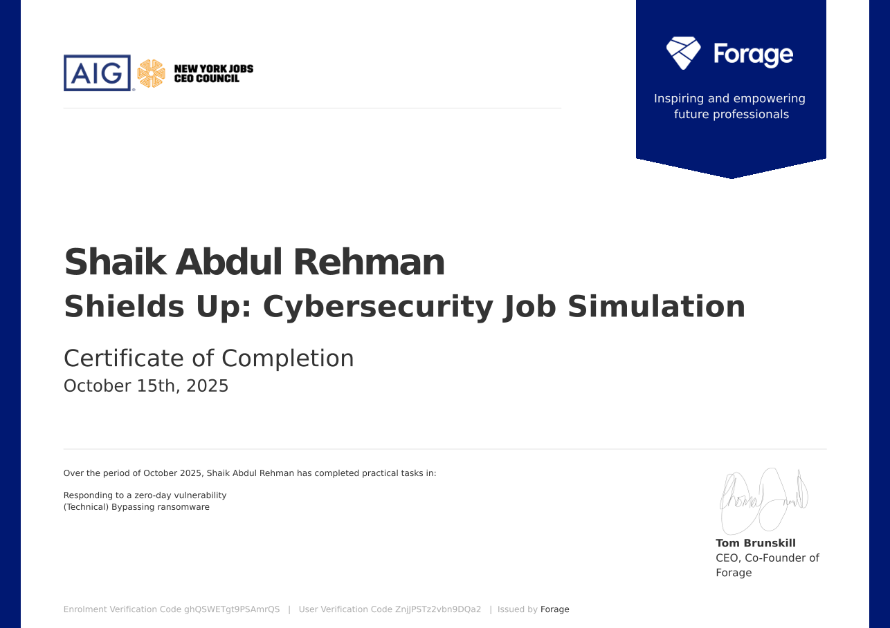
Vulnerability Response & Ransomware Recovery
View ReportGemini University Student Certificate
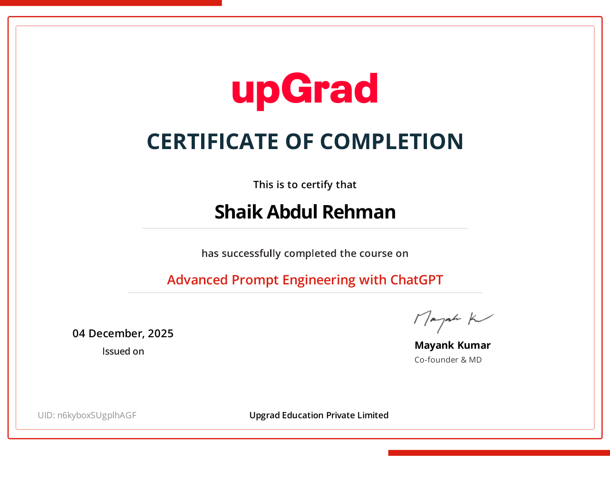
Advance Prompt Engineering – UpGrad
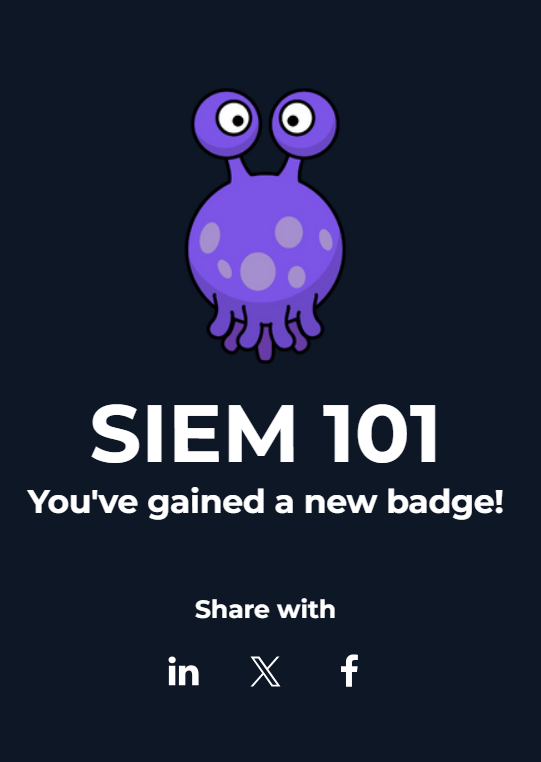
SIEM 101
Log monitoring & SIEM alert analysis fundamentals
Log Analysis With Sysmon
Windows event log analysis using Sysmon
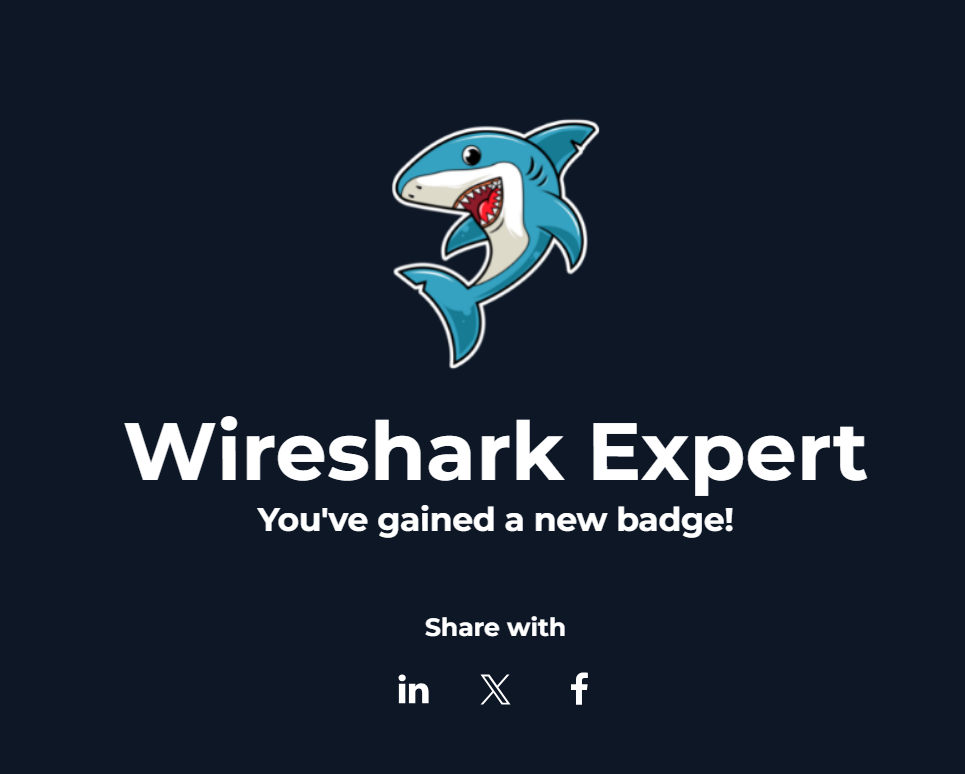
Malware Traffic Analysis
Network traffic analysis & packet inspection
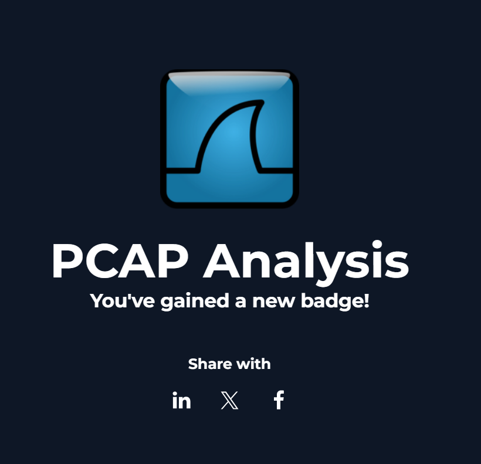
PCAP Analysis
Network packet capture analysis using Wireshark
Network Cable
Networking fundamentals & connectivity concepts
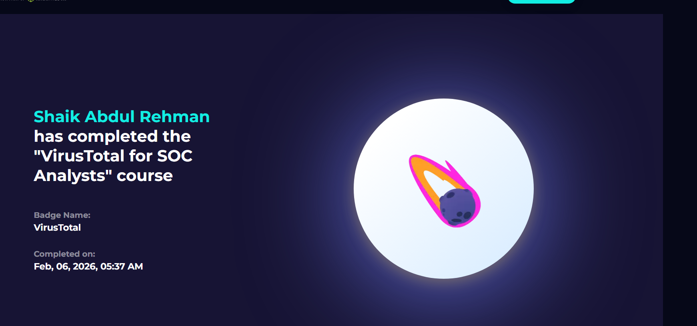
VirusTotal Analyst
Threat intelligence & file/URL analysis
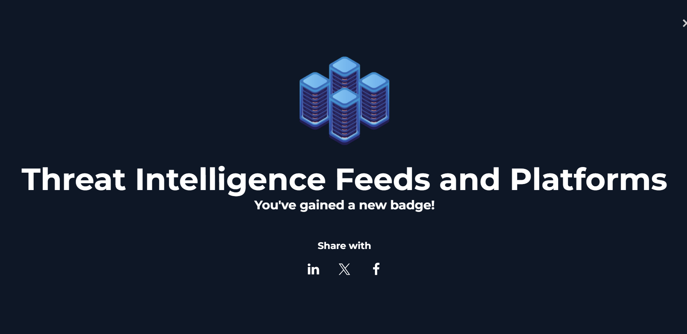
Threat Intelligence Feeds and Platforms
Leveraging threat intel feeds & platforms for proactive defense
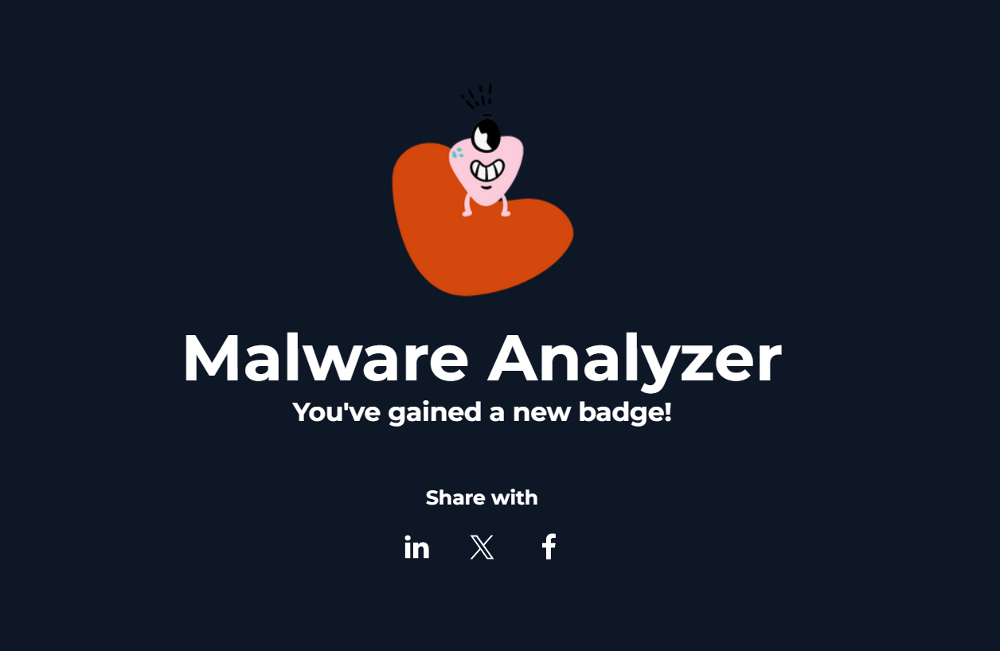
Malware Analyzer
Malware behavior analysis & threat identification
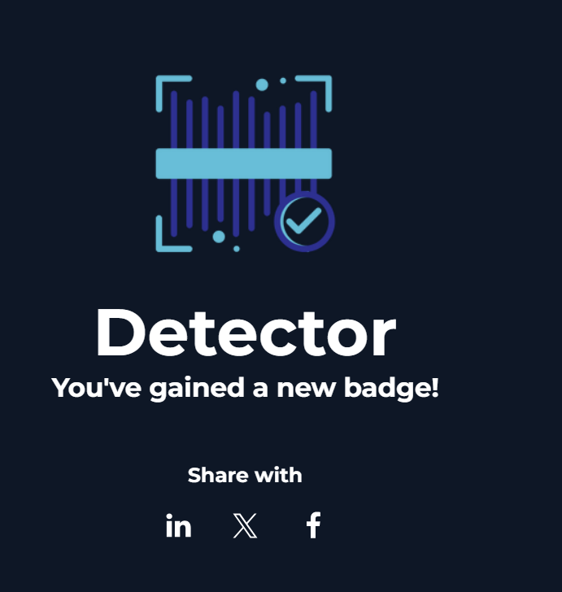
Detector
Alert investigation & IOC detection across endpoint and network logs
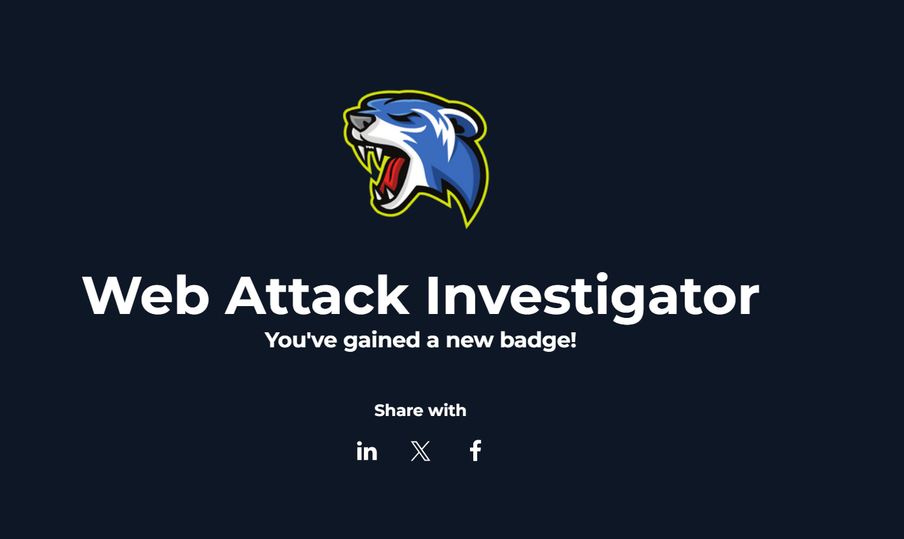
Web Attack Investigation
Web attack detection & investigation (XSS, SQLi)
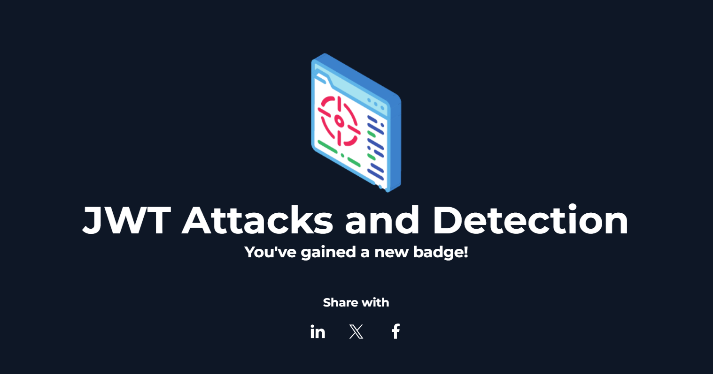
JWT Attacks and Detection
JWT token exploitation & authentication attack detection
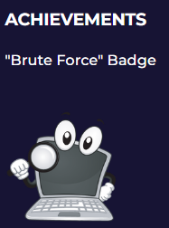
Brute Force Investigation
Brute-force attack detection & authentication analysis
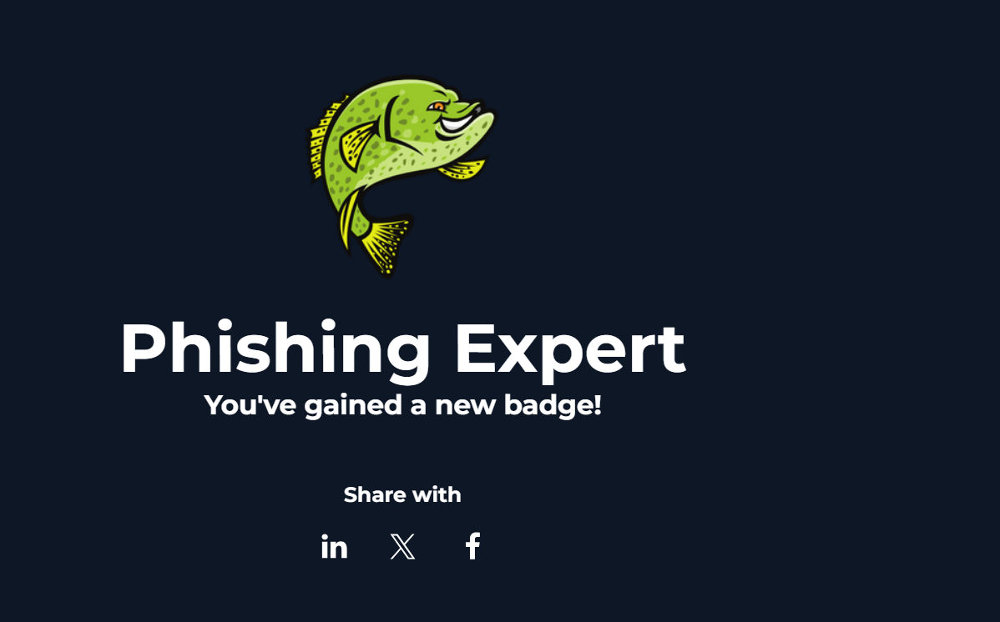
Phishing Analysis
Email threat detection & phishing analysis
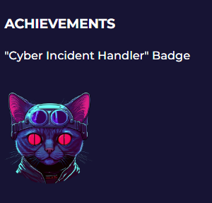
Cyber Incident Handler
Incident response & threat handling workflow
Actively seeking SOC Analyst opportunities to contribute to real-world security operations
📧 Email: cybershaik66@gmail.com
🔗 LinkedIn: linkedin.com/in/shaik-abdul-rehman
📍 Location: India (Open to Remote / Relocation – Saudi Arabia / UAE)
🟢 Open to SOC Analyst / Cybersecurity Opportunities